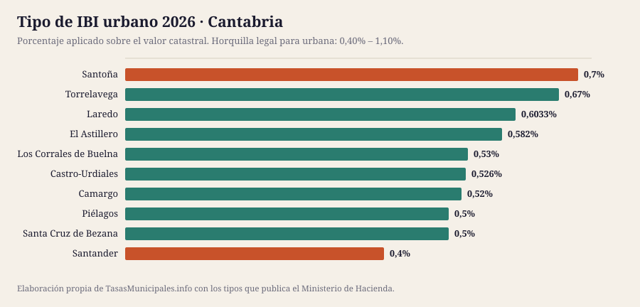
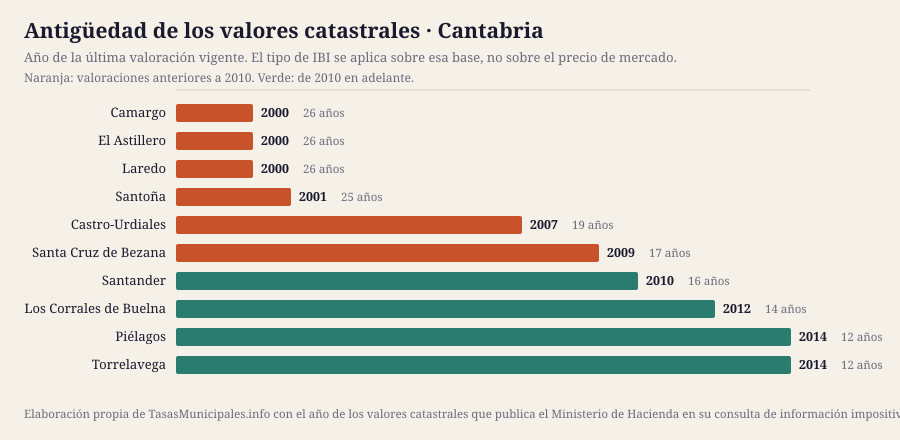

IBI, tasa de basuras y plusvalía en Cantabria 2026
Esta guía reúne el IBI, la plusvalía municipal, el impuesto de circulación y las bonificaciones de los 10 municipios de Cantabria que cubrimos, con el detalle de cada uno y una tabla para compararlos de un vistazo. Población cubierta: 382.992 habitantes.
Lo que cuesta el IBI en Cantabria en 2026
El tipo de IBI urbano en Cantabria se mueve entre el 0,4% de Santander y el 0,7% de Santoña, con una media de 0,55% en los 10 municipios analizados. Esa horquilla parece pequeña, pero sobre un valor catastral de 50.000 € supone una diferencia de 150 € al año según dónde esté el inmueble: 200 € en Santander frente a 350 € en Santoña.
El tipo no lo explica todo: sobre él se aplica el valor catastral, y en Cantabria las valoraciones vigentes van de 2000 en Camargo a 2014 en Piélagos. En 6 de los 10 municipios con dato la última valoración es anterior a 2010, así que la base del recibo arrastra el mercado inmobiliario de entonces. El año de los valores de cada municipio está en la tabla, tal y como lo publica el Ministerio de Hacienda.
Aquí no publicamos el importe de la tasa de residuos ni las fechas de cobro de cada municipio: no existe fuente estatal que los recoja y preferimos el hueco a un dato sin respaldo. Lo que sí fija la ley es el plazo por defecto del IBI, del 1 de septiembre al 20 de noviembre cuando la ordenanza no señala otro (art. 62.3 de la Ley General Tributaria). La mecánica general del impuesto está en las guías de IBI 2026, bonificaciones y plusvalía; aquí van los datos de Cantabria.
Ficha fiscal de cada municipio
Tabla comparativa: el IBI en los 10 municipios de Cantabria
Ordenable por cualquier columna. Todas las cifras salen de la consulta de información impositiva del Ministerio de Hacienda. «Cuota IBI» aplica el tipo de cada municipio a un valor catastral común de 50.000 €; con el de tu recibo, usa la calculadora. «Valores catastrales» es el año de la última valoración vigente, que determina la base sobre la que se aplica el tipo.
| Municipio | Habitantes | IBI urbano | IBI rústico | Cuota IBI (VC 50.000 €) | Valores catastrales | Tipo BICE |
|---|---|---|---|---|---|---|
| Santander | 175.425 | 0,4% | 0,87% | 200 € | 2010 | 0,6% |
| Torrelavega | 51.796 | 0,67% | 0,67% | 335 € | 2014 | 1,3% |
| Castro-Urdiales | 33.450 | 0,526% | 0,6426% | 263 € | 2007 | 0,6% |
| Camargo | 30.577 | 0,52% | 0,78% | 260 € | 2000 | 0,85% |
| Piélagos | 26.901 | 0,5% | 0,49% | 250 € | 2014 | 0,5% |
| El Astillero | 18.448 | 0,582% | 0,3102% | 291 € | 2000 | 1,071% |
| Santa Cruz de Bezana | 13.904 | 0,5% | 0,3% | 250 € | 2009 | 0,6% |
| Los Corrales de Buelna | 10.958 | 0,53% | 0,68% | 265 € | 2012 | 0,62% |
| Santoña | 10.835 | 0,7% | 0,3% | 350 € | 2001 | 0,6% |
| Laredo | 10.698 | 0,6033% | 0,645% | 302 € | 2000 | 0,6% |


Quién gestiona y cobra el IBI en Cantabria
El recibo, el calendario y las solicitudes se tramitan donde esté la recaudación, que no siempre es el ayuntamiento:
| Provincia | Municipios en la guía | Organismo de recaudación | Estado del enlace |
|---|---|---|---|
| Cantabria | 10 | Cada ayuntamiento, por su cuenta | — |
En Cantabria no hemos identificado un organismo provincial de recaudación para estos municipios: el calendario y la ventanilla de pago están en la web de cada ayuntamiento.
De ahí que no haya una fecha única para toda Cantabria: cada organismo publica su calendario.
¿Dónde se paga más y menos IBI en Cantabria?
La mediana del tipo urbano de los 10 municipios de Cantabria es del 0,53%, y queda 0,079 puntos por debajo de la mediana nacional de la guía (0,61%): 39 € menos al año por un inmueble de 50.000 €. 1 de ellos aplican exactamente el mínimo legal del 0,40% (Santander).
En el extremo alto está Santoña con el 0,7%; en el bajo está Santander con el 0,4%. Ojo: un tipo alto no significa un recibo alto, porque la cuota es valor catastral × tipo. Ranking nacional →
Quién ha movido el tipo entre 2024 y 2025
En Cantabria, 3 municipios han subido el tipo y un municipio lo ha bajado; el resto lo mantiene.
| Municipio | 2024 | 2025 | Variación |
|---|---|---|---|
| Camargo | 0,477% | 0,52% | Sube 0,043 puntos |
| Torrelavega | 0,64% | 0,67% | Sube 0,030 puntos |
| Santoña | 0,715% | 0,7% | Baja 0,015 puntos |
| Laredo | 0,6% | 0,6033% | Sube 0,003 puntos |
ICIO, impuesto de circulación y plusvalía en Cantabria
El IBI no es el único tributo que aprueba un ayuntamiento. En Cantabria, el ICIO va del 2,5% al 4% (mediana 3,7%); un turismo de 8 a 11,99 CV paga entre 49,50 € y 68,16 € al año; 8 de 10 aplican los coeficientes máximos de plusvalía del art. 107.4 TRLRHL.
| Municipio | ICIO (obras) | IVTM 8–11,99 CV | Plusvalía: tipo máximo | ¿Coeficientes al tope legal? |
|---|---|---|---|---|
| Camargo | 4% | 65,09 € | 26% | Sí |
| Castro-Urdiales | 4% | 68,16 € | 14,3% | Sí |
| El Astillero | 2,55% | 64,21 € | 21% | No |
| Laredo | 4% | 68,16 € | 30% | Sí |
| Los Corrales de Buelna | 3,4% | 57,97 € | 30% | No |
| Piélagos | 2,5% | 53,90 € | 21% | Sí |
| Santa Cruz de Bezana | 2,8% | 49,50 € | 27% | Sí |
| Santander | 4% | 67,96 € | 21% | Sí |
| Santoña | 3,18% | 63,16 € | 30% | Sí |
| Torrelavega | 4% | 66,80 € | 30% | Sí |
Fuente: Ministerio de Hacienda. El guion marca lo que la consulta no publica. La tarifa completa del IVTM está en cada ficha.
Guía del impuesto de circulación → · Comparativa del IVTM → · Quién aplica el coeficiente máximo de plusvalía →
Cuándo se revisaron los valores catastrales en Cantabria
La cuota del IBI es valor catastral × tipo, así que la fecha de la última valoración colectiva pesa tanto como el porcentaje que vota el pleno. En Cantabria la mediana está en 2008, más reciente que la del conjunto de la guía (2005), y 4 de 10 municipios arrastran valores de hace 20 años o más.
| Municipio | Año de la valoración | Antigüedad | Tipo urbano |
|---|---|---|---|
| Camargo | 2000 | 26 años | 0,52% |
| El Astillero | 2000 | 26 años | 0,582% |
| Laredo | 2000 | 26 años | 0,6033% |
| Santoña | 2001 | 25 años | 0,7% |
| Castro-Urdiales | 2007 | 19 años | 0,526% |
| Santa Cruz de Bezana | 2009 | 17 años | 0,5% |
| Santander | 2010 | 16 años | 0,4% |
| Los Corrales de Buelna | 2012 | 14 años | 0,53% |
| Torrelavega | 2014 | 12 años | 0,67% |
| Piélagos | 2014 | 12 años | 0,5% |
Qué es el valor catastral, cómo se consulta y cómo se corrige → · Qué implica una ponencia desfasada →
Población de los municipios de Cantabria (2020–2025)
El padrón no cambia el IBI, pero sí explica la tasa de residuos: cuando el coste del servicio se reparte entre menos vecinos, la tarifa sube. En conjunto, los 10 municipios de Cantabria que cubrimos han ganado 5.668 habitantes desde 2020 (8 crecen, 2 pierden población).
| Municipio | 2020 | 2025 | Variación | % |
|---|---|---|---|---|
| Santander | 173.375 | 175.425 | +2.050 | +1,2 % |
| Torrelavega | 51.597 | 51.796 | +199 | +0,4 % |
| Castro-Urdiales | 32.270 | 33.450 | +1.180 | +3,7 % |
| Camargo | 30.320 | 30.577 | +257 | +0,8 % |
| Piélagos | 25.731 | 26.901 | +1.170 | +4,5 % |
| El Astillero | 18.134 | 18.448 | +314 | +1,7 % |
| Santa Cruz de Bezana | 13.088 | 13.904 | +816 | +6,2 % |
| Los Corrales de Buelna | 10.767 | 10.958 | +191 | +1,8 % |
| Santoña | 11.019 | 10.835 | -184 | -1,7 % |
| Laredo | 11.023 | 10.698 | -325 | -2,9 % |
Fuente: INE, padrón a 1 de enero.

Ficha fiscal de los 10 municipios de Cantabria
Cada ficha recoge el detalle de ese ayuntamiento: tipos aprobados, calendario de cobro, bonificaciones, plusvalía y enlaces oficiales donde comprobarlo.
- Santander — IBI 0,4% · cuota 200 € con VC de 50.000 € · valores de 2010
- Torrelavega — IBI 0,67% · cuota 335 € con VC de 50.000 € · valores de 2014
- Castro-Urdiales — IBI 0,526% · cuota 263 € con VC de 50.000 € · valores de 2007
- Camargo — IBI 0,52% · cuota 260 € con VC de 50.000 € · valores de 2000
- Piélagos — IBI 0,5% · cuota 250 € con VC de 50.000 € · valores de 2014
- El Astillero — IBI 0,582% · cuota 291 € con VC de 50.000 € · valores de 2000
- Santa Cruz de Bezana — IBI 0,5% · cuota 250 € con VC de 50.000 € · valores de 2009
- Los Corrales de Buelna — IBI 0,53% · cuota 265 € con VC de 50.000 € · valores de 2012
- Santoña — IBI 0,7% · cuota 350 € con VC de 50.000 € · valores de 2001
- Laredo — IBI 0,6033% · cuota 302 € con VC de 50.000 € · valores de 2000
Preguntas frecuentes sobre el IBI y las tasas en Cantabria
¿Qué municipio de Cantabria tiene el IBI más alto en 2026?
De los 10 municipios analizados, el tipo urbano más alto es el de Santoña (0,7%) y el más bajo el de Santander (0,4%). Sobre un valor catastral de 50.000 € son 350 € frente a 200 € al año.
¿Cuál es el tipo medio de IBI en Cantabria?
La media de los 10 municipios de Cantabria que recoge esta guía es del 0,55%, con una mediana del 0,53%. La ley permite moverse entre el 0,40% y el 1,10% en urbana.
¿Cuándo se paga el IBI en Cantabria?
No hay una fecha única: la fija cada ordenanza y se aprueba cada ejercicio, por eso no publicamos fechas concretas. Cuando la ordenanza no señala otro plazo se aplica el del artículo 62.3 de la Ley General Tributaria, del 1 de septiembre al 20 de noviembre, y quien lo modifique no puede dejarlo en menos de dos meses. El calendario del año lo publica el organismo que recauda, enlazado en la ficha de cada municipio.
¿Cuánto se paga de basuras en Cantabria?
No lo publicamos porque no podemos verificarlo: la tarifa está en la ordenanza fiscal de cada ayuntamiento y ninguna administración estatal las reúne. La Ley 7/2022 obliga desde el 10 de abril de 2025 a cobrar una tasa de residuos específica, diferenciada y no deficitaria (art. 11.3), y solo exige comunicarla a la comunidad autónoma (art. 11.5). En la guía de la tasa de residuos explicamos dónde localizar la tuya.
¿Dónde cuesta más el impuesto de circulación en Cantabria?
Por un turismo de 8 a 11,99 caballos fiscales, el más caro de Cantabria es Laredo con 68,16 € al año y el más barato Santa Cruz de Bezana con 49,50 €. La cuota mínima que fija la ley es de 34,08 €.
Qué está verificado en esta página
| Dato | Estado en Cantabria |
|---|---|
| Tipos de IBI, rústica, BICE y año de los valores catastrales | 10 de 10 contrastados con el Ministerio de Hacienda |
| Tasa de residuos y fechas de cobro | No se publican: las fija cada ordenanza, no hay registro estatal y no hemos podido acceder a una fuente primaria |
Si un dato no coincide con lo que dice tu ayuntamiento, manda la ordenanza publicada en el boletín oficial. Qué fuente respalda cada dato y cómo corregimos → · Avisar de un error
Normativa citada en esta página
- Real Decreto Legislativo 2/2004 (texto refundido de la Ley Reguladora de las Haciendas Locales)
- Real Decreto Legislativo 1/2004 (texto refundido de la Ley del Catastro Inmobiliario)
- Ley 7/2022, de 8 de abril, de residuos y suelos contaminados para una economía circular
- Real Decreto-ley 26/2021, de 8 de noviembre (adaptación del IIVTNU a la jurisprudencia constitucional)
- Sentencia del Tribunal Constitucional 182/2021, de 26 de octubre
- Ley 58/2003, de 17 de diciembre, General Tributaria
- Sede Electrónica del Catastro